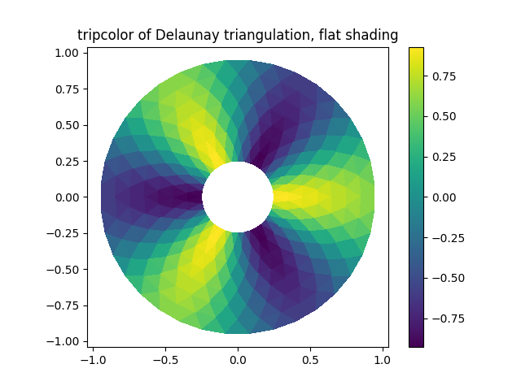

Note
Click here to download the full example code
09. mpl.tripcolor
Create a pseudocolor plot of an unstructured triangular grid.
- 
9 import matplotlib.pyplot as plt
10 import matplotlib.tri as tri
11 import numpy as np
12
13 # First create the x and y coordinates of the points.
14 n_angles = 36
15 n_radii = 8
16 min_radius = 0.25
17 radii = np.linspace(min_radius, 0.95, n_radii)
18
19 angles = np.linspace(0, 2 * np.pi, n_angles, endpoint=False)
20 angles = np.repeat(angles[..., np.newaxis], n_radii, axis=1)
21 angles[:, 1::2] += np.pi / n_angles
22
23 x = (radii * np.cos(angles)).flatten()
24 y = (radii * np.sin(angles)).flatten()
25 z = (np.cos(radii) * np.cos(3 * angles)).flatten()
26
27 # Create the Triangulation; no triangles so Delaunay triangulation created.
28 triang = tri.Triangulation(x, y)
29
30 # Mask off unwanted triangles.
31 triang.set_mask(np.hypot(x[triang.triangles].mean(axis=1),
32 y[triang.triangles].mean(axis=1))
33 < min_radius)
34
35 fig1, ax1 = plt.subplots()
36 ax1.set_aspect('equal')
37 tpc = ax1.tripcolor(triang, z, shading='flat')
38 fig1.colorbar(tpc)
39 ax1.set_title('tripcolor of Delaunay triangulation, flat shading')
40
41 fig2, ax2 = plt.subplots()
42 ax2.set_aspect('equal')
43 tpc = ax2.tripcolor(triang, z, shading='gouraud')
44 fig2.colorbar(tpc)
45 ax2.set_title('tripcolor of Delaunay triangulation, gouraud shading')
46
47
48 xy = np.asarray([
49 [-0.101, 0.872], [-0.080, 0.883], [-0.069, 0.888], [-0.054, 0.890],
50 [-0.045, 0.897], [-0.057, 0.895], [-0.073, 0.900], [-0.087, 0.898],
51 [-0.090, 0.904], [-0.069, 0.907], [-0.069, 0.921], [-0.080, 0.919],
52 [-0.073, 0.928], [-0.052, 0.930], [-0.048, 0.942], [-0.062, 0.949],
53 [-0.054, 0.958], [-0.069, 0.954], [-0.087, 0.952], [-0.087, 0.959],
54 [-0.080, 0.966], [-0.085, 0.973], [-0.087, 0.965], [-0.097, 0.965],
55 [-0.097, 0.975], [-0.092, 0.984], [-0.101, 0.980], [-0.108, 0.980],
56 [-0.104, 0.987], [-0.102, 0.993], [-0.115, 1.001], [-0.099, 0.996],
57 [-0.101, 1.007], [-0.090, 1.010], [-0.087, 1.021], [-0.069, 1.021],
58 [-0.052, 1.022], [-0.052, 1.017], [-0.069, 1.010], [-0.064, 1.005],
59 [-0.048, 1.005], [-0.031, 1.005], [-0.031, 0.996], [-0.040, 0.987],
60 [-0.045, 0.980], [-0.052, 0.975], [-0.040, 0.973], [-0.026, 0.968],
61 [-0.020, 0.954], [-0.006, 0.947], [ 0.003, 0.935], [ 0.006, 0.926],
62 [ 0.005, 0.921], [ 0.022, 0.923], [ 0.033, 0.912], [ 0.029, 0.905],
63 [ 0.017, 0.900], [ 0.012, 0.895], [ 0.027, 0.893], [ 0.019, 0.886],
64 [ 0.001, 0.883], [-0.012, 0.884], [-0.029, 0.883], [-0.038, 0.879],
65 [-0.057, 0.881], [-0.062, 0.876], [-0.078, 0.876], [-0.087, 0.872],
66 [-0.030, 0.907], [-0.007, 0.905], [-0.057, 0.916], [-0.025, 0.933],
67 [-0.077, 0.990], [-0.059, 0.993]])
68 x, y = np.rad2deg(xy).T
69
70 triangles = np.asarray([
71 [67, 66, 1], [65, 2, 66], [ 1, 66, 2], [64, 2, 65], [63, 3, 64],
72 [60, 59, 57], [ 2, 64, 3], [ 3, 63, 4], [ 0, 67, 1], [62, 4, 63],
73 [57, 59, 56], [59, 58, 56], [61, 60, 69], [57, 69, 60], [ 4, 62, 68],
74 [ 6, 5, 9], [61, 68, 62], [69, 68, 61], [ 9, 5, 70], [ 6, 8, 7],
75 [ 4, 70, 5], [ 8, 6, 9], [56, 69, 57], [69, 56, 52], [70, 10, 9],
76 [54, 53, 55], [56, 55, 53], [68, 70, 4], [52, 56, 53], [11, 10, 12],
77 [69, 71, 68], [68, 13, 70], [10, 70, 13], [51, 50, 52], [13, 68, 71],
78 [52, 71, 69], [12, 10, 13], [71, 52, 50], [71, 14, 13], [50, 49, 71],
79 [49, 48, 71], [14, 16, 15], [14, 71, 48], [17, 19, 18], [17, 20, 19],
80 [48, 16, 14], [48, 47, 16], [47, 46, 16], [16, 46, 45], [23, 22, 24],
81 [21, 24, 22], [17, 16, 45], [20, 17, 45], [21, 25, 24], [27, 26, 28],
82 [20, 72, 21], [25, 21, 72], [45, 72, 20], [25, 28, 26], [44, 73, 45],
83 [72, 45, 73], [28, 25, 29], [29, 25, 31], [43, 73, 44], [73, 43, 40],
84 [72, 73, 39], [72, 31, 25], [42, 40, 43], [31, 30, 29], [39, 73, 40],
85 [42, 41, 40], [72, 33, 31], [32, 31, 33], [39, 38, 72], [33, 72, 38],
86 [33, 38, 34], [37, 35, 38], [34, 38, 35], [35, 37, 36]])
87
88 xmid = x[triangles].mean(axis=1)
89 ymid = y[triangles].mean(axis=1)
90 x0 = -5
91 y0 = 52
92 zfaces = np.exp(-0.01 * ((xmid - x0) * (xmid - x0) +
93 (ymid - y0) * (ymid - y0)))
94
95 fig3, ax3 = plt.subplots()
96 ax3.set_aspect('equal')
97 tpc = ax3.tripcolor(x, y, triangles, facecolors=zfaces, edgecolors='k')
98 fig3.colorbar(tpc)
99 ax3.set_title('tripcolor of user-specified triangulation')
100 ax3.set_xlabel('Longitude (degrees)')
101 ax3.set_ylabel('Latitude (degrees)')
102
103 plt.show()
Total running time of the script: ( 0 minutes 0.287 seconds)